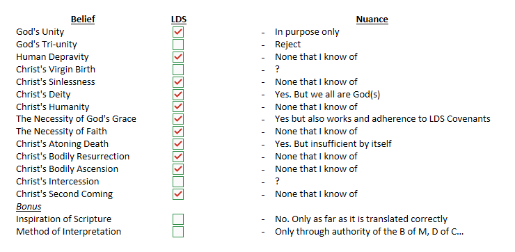

My weekly conversation with the Mormon missionaries keeps circling the same territory, and this week I wanted to go somewhere they don't expect — the roles and responsibilities of each person of the Trinity, even though in their framework, Father, Son, and Spirit are three separate, individual gods rather than one God in three persons.

Here's how I think about the roles, and I want to be careful about one instinct I've had — the pull to call the Holy Spirit the "more sensitive" or "more emotional" member of the Trinity. That phrasing is tempting because Scripture does describe the Spirit in strikingly personal, relational terms. But it's the wrong way to say something true, so let me sort out both halves.
One God, three persons, one will. There's one divine being, three distinct persons, and each person is fully God, sharing all the same divine attributes — omniscience, omnipotence, holiness, perfect love. They act inseparably in every work of God: creation, redemption, sanctification all involve all three, just with different emphases. A summary I find genuinely useful, even though it's not a direct quote of any single verse: the Father plans, the Son accomplishes, and the Spirit applies.
The Father is the source and initiator — "for us there is one God, the Father, from whom are all things and for whom we exist" (1 Corinthians 8:6). He's the origin of creation, revelation, and the plan of salvation, and He sends the Son and the Spirit, who obey and glorify Him in return.
The Son is the agent of creation — "all things were created through him and for him" (John 1:3, Colossians 1:16) — and the one who reveals the Father, being "the exact imprint of his nature" (Hebrews 1:3). He's the one who becomes incarnate, lives obediently, dies, rises, and now reigns and intercedes for us.
The Holy Spirit is the presence of God with and in us — hovering over creation at the very beginning (Genesis 1:2), and now regenerating, indwelling, and sealing believers (John 3:5–8, Ephesians 1:13–14). He applies what Christ accomplished: convicting, giving new birth, uniting us to Christ, sanctifying, teaching, and empowering the church for mission. One theologian's summary of the whole arc: the Father directs and sends, the Son obeys and is sent, and the Spirit carries out the work in us.
So back to the "more sensitive" instinct. It's true that Scripture speaks of the Spirit in emotional terms in a way it doesn't as often for the Father and the Son — He can be grieved (Ephesians 4:30), resisted (Acts 7:51), quenched (1 Thessalonians 5:19), and He produces deeply affective fruit like love, joy, and peace (Galatians 5:22–23). But that's not because the Spirit feels more than the Father or the Son — it's because His particular role, indwelling and applying, means Scripture describes Him in terms of how He's affected by our obedience or sin, and how He shapes our emotional life. Saying He's "the sensitive one" risks implying the Trinity is made of unequal parts, which isn't biblical — God is one indivisible being, not a committee with a soft-hearted member. It also risks implying the Father and Son are somehow less relationally responsive, which forgets the Father's grief over sin throughout the Old Testament and Jesus' own weeping and compassion in the Gospels.
The better way to say what I was reaching for: the Holy Spirit is the primary personal presence of God within us, so Scripture often speaks of Him in emotional terms — He can be grieved and quenched, and He produces holy affections in us. That keeps the equality of the three persons intact while still honoring what's genuinely distinct about the Spirit's role.